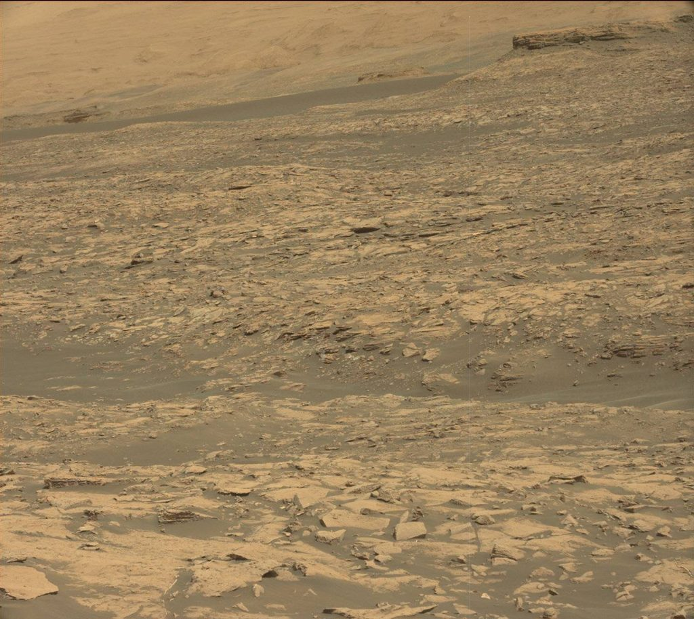
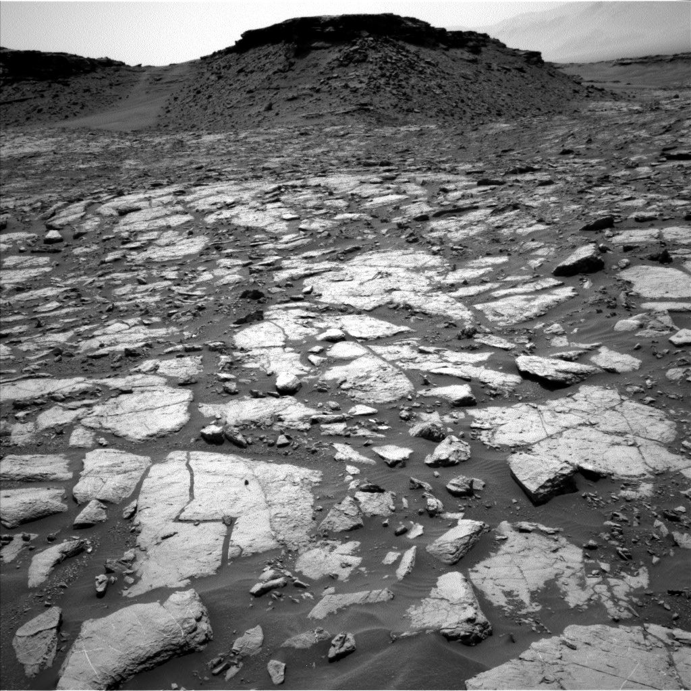
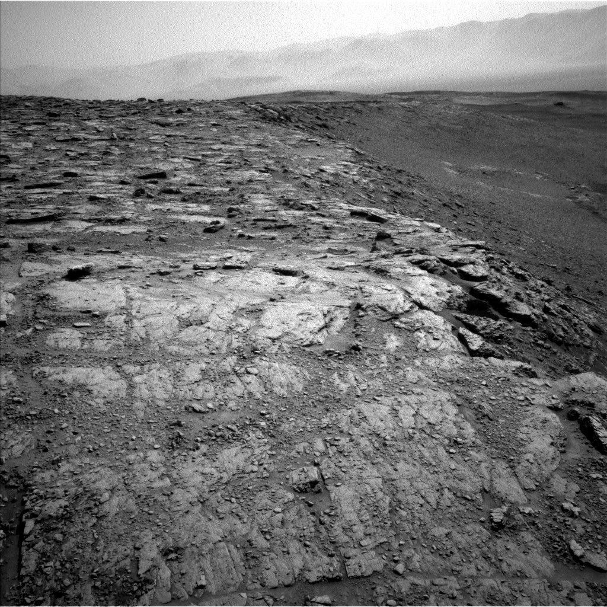
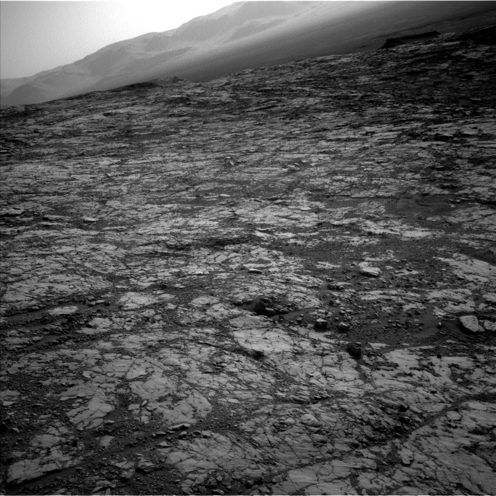
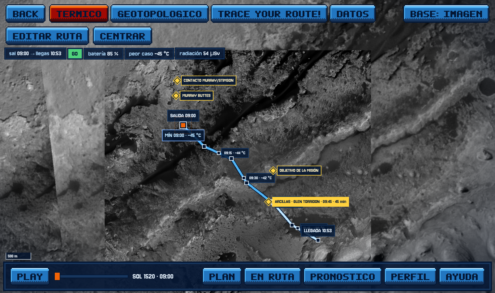
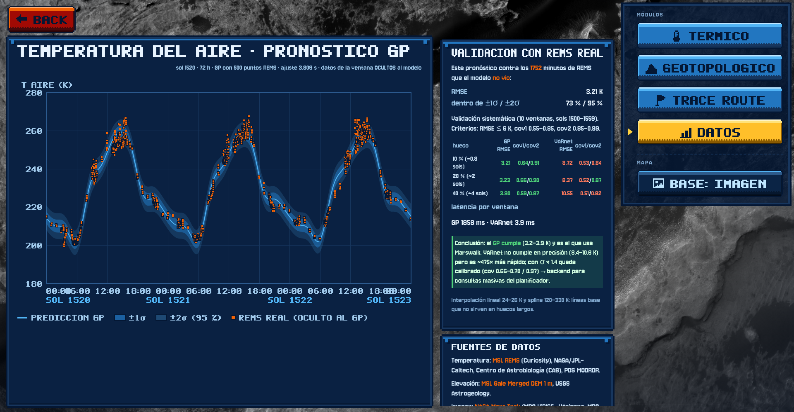
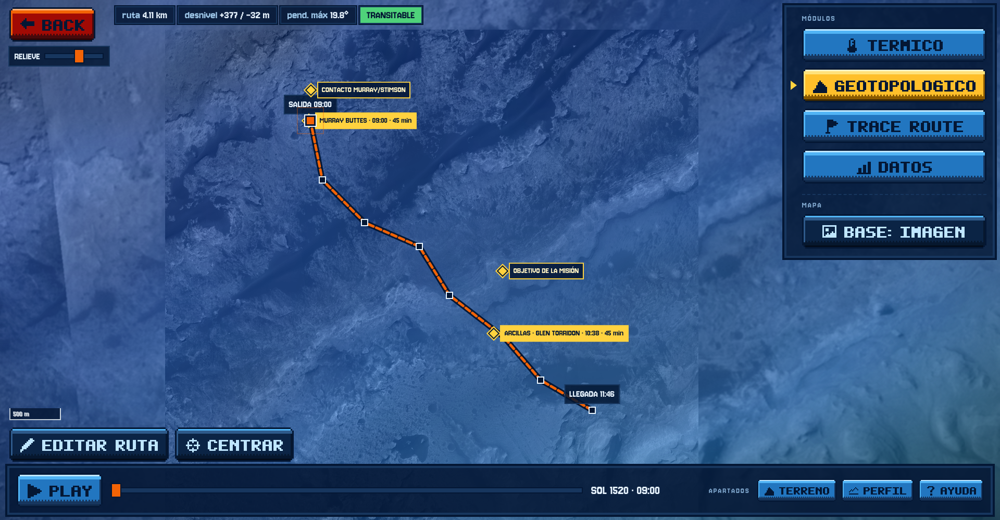
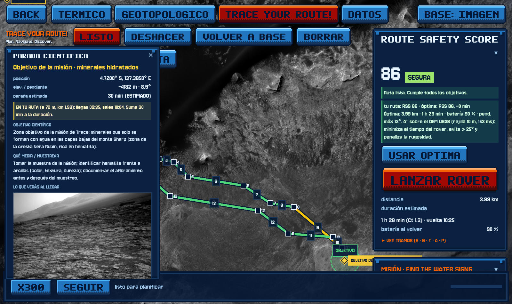
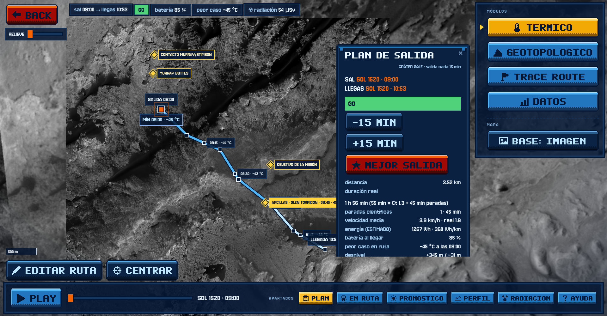

Astertrail
MARSWALK
Interplanetary Exploration Planning System
En Marte, si calculas mal el frío, la batería o la pendiente, no vuelves.
Marswalk te dice cuándo salir, por dónde ir y si podrás regresar.
Murray Buttes, cráter Gale · Mastcam, sol 1454 · NASA/JPL-Caltech/MSSS
0:00–0:20 · DISEÑADORA 1 · Gancho
«En la Tierra, si sales a caminar y hace frío, vuelves a casa. En Marte, si calculas mal el frío, la batería o la pendiente, no vuelves. Somos Astertrail y esto es Marswalk: le dice a un astronauta cuándo salir, por dónde ir y si podrá regresar.»
→ Avanza sin pausa.
CRITERIO · RELEVANCIA
Explorar Marte implica
tomar decisiones críticas.
≈ −73 °C
Mínima pronosticada de madrugada en el cráter Gale.
REMS · Curiosity + pronóstico
> 25°
Pendiente que el vehículo no puede subir. La ruta recta de la misión la cruza.
DEM USGS · HiRISE estéreo
20 %
Batería mínima para volver al hábitat.
Regla de la misión
4–24 min
Retraso de comunicación con la Tierra: la decisión se toma allí.
Distancia Tierra–Marte
Design Thinking: empatizamos con el astronauta y delimitamos el problema a una salida real: el cráter Gale en el sol 1520, donde estaba Curiosity (nov. 2016).
Los riesgos no ocurren por separado.Deben evaluarse en conjunto.
0:20–0:55 · DISEÑADORA 1 · Problema
«Una salida en Marte depende de cuatro riesgos a la vez. El frío: de madrugada, el cráter Gale baja a unos menos setenta y tres grados. El terreno: hay cuestas de más de veinticinco grados que el vehículo no puede subir. La batería: hay que volver con al menos un veinte por ciento. Y la Tierra está a entre cuatro y veinticuatro minutos por radio: la decisión se toma allí. Nuestro programador les cuenta cómo lo resolvimos.»
→ RELEVO al programador (mirarlo al decir la última frase).
CRITERIO · VALIDEZ · CIENCIA ABIERTA
Una sola plataforma.
Siete fuentes de datos abiertos.
MAPEAREl terreno real, a 0,6 m por píxel.
EVALUARFrío, pendiente, batería y radiación en cada tramo.
DECIDIRGO · PRECAUCIÓN · NO-GO, y la mejor hora de salida.
Imagen del terreno
NASA Mars Trek · HiRISE (MRO)
0,6 m/px
Relieve y pendiente
USGS Astrogeology · DEM de Gale
Estéreo HiRISE, 1 m → 10 m
Relieve regional
MOLA (NASA) + HRSC (ESA)
~200 m/px
Temperatura del aire
REMS de Curiosity · vía PDS
NASA/JPL + CAB-INTA (España) · 500 puntos
Paradas científicas
Waypoints oficiales de MSL
1389 posiciones · sols 3–5073
Radiación
Instrumento RAD de Curiosity
0,67 mSv/día · Hassler et al. 2014




Fotos del destino
Imágenes crudas Mastcam / Navcam de Curiosity
4 sitios: «lo que verás al llegar»

Todo cruzado en un mapa: ruta coloreada por temperatura a la hora de paso + paradas científicas
Ciencia abierta de la NASA y agencias aliadas (ESA, CAB-INTA), cruzada en un solo mapa que funciona sin internet.
0:55–1:35 · PROGRAMADOR · Datos abiertos
«Marswalk cruza siete fuentes de datos abiertos en un solo mapa. La imagen del terreno es HiRISE, a sesenta centímetros por píxel; el relieve, el modelo del USGS; la temperatura, la estación REMS de Curiosity. Y también usamos los waypoints oficiales del rover, sus fotos reales y su medidor de radiación. Datos de la NASA, la ESA y el CAB español. Y todo corre en el navegador, sin internet, porque en Marte no hay nube.»
→ Señalar la tira de fotos al decir «fotos reales».
CRITERIO · VALIDEZ
Decidimos con el peor caso,
no con el promedio.
- Pronóstico de 72 h con un proceso gaussiano que calcula su propia incertidumbre.
- GO / PRECAUCIÓN / NO-GO con el límite frío del 95 % (μ − 1,96σ), a la hora en que pasarás por cada punto.
- Física del vehículo cada 5 m: pendiente, curvas, potencia y batería. Referencia: rover lunar Apolo (700 kg · 746 W · 8,7 kWh).
22pruebas automáticas en verde
física del vehículo · ruta óptima · puntuación de seguridad

Módulo DATOS: pronóstico (azul) frente a la temperatura real de REMS ocultada al modelo (naranja).
3,2 K
Error medio (RMSE) sobre 1752 min de REMS que el modelo no vio.
95 %
De los datos reales dentro de su banda de ±2σ (73 % en ±1σ): incertidumbre honesta.
3,2–3,9 K
En 10 ventanas (sols 1500–1559) con huecos de hasta ~4 sols. Criterio ≤ 6 K ✔
8,4–10,6 K
Red neuronal VARnet: 475× más rápida pero no cumple → motor rápido, no de decisión.
1:35–2:15 · PROGRAMADOR · Validación
«La clave es cómo decide. Pronosticamos la temperatura de 72 horas con un proceso gaussiano, un modelo que además dice cuánto se fía de sí mismo. Y decidimos con el peor caso, no con el promedio. ¿Funciona? Lo probamos contra datos reales que el modelo nunca vio: error medio de tres coma dos kelvin, y el noventa y cinco por ciento de los datos cae dentro de su margen. Una red neuronal era 475 veces más rápida, pero casi tres veces menos precisa: elegimos precisión.»
→ Si vas tarde, salta la frase de la red neuronal.
CRITERIO · CREATIVIDAD
TRACE YOUR ROUTE! Find the Water Signs.
Llegar a los minerales hidratados del monte Sharp y volver a la base con al menos un 20 % de batería.

01 — RUTA DIRECTA
La línea recta cruza un escarpe de más de 25°.
Resultado: NO-GO

02 — RUTA ÓPTIMA A*
3,99 km · 1 h 28 min · pendiente máx. 12,7° · batería 90 % · calculada en 137 ms.
Resultado: RSS 86 · MISIÓN CUMPLIDA

03 — MEJOR SALIDA
Prueba cada 15 min de los 3 sols y elige la hora más templada que sigue siendo viable.
Resultado: hora recomendada
EN VIVORuta de 4 km · salida 09:00 → llegada 10:53 · parada de 45 min en las arcillas de Glen Torridon · GO · batería 85 % · peor caso −45 °C · radiación 54 µSv (≈ media radiografía de tórax).
No solo encontramos rutas.Evaluamos cuál conviene seguir.
2:15–2:55 · PROGRAMADOR · Demo TRACE
«Así se ve en la misión. La ruta recta cruza una cuesta de más de veinticinco grados: NO-GO. Pulsamos optimizar y el algoritmo A estrella encuentra, en 137 milisegundos, una ruta de cuatro kilómetros de ida y vuelta con noventa por ciento de batería: misión cumplida. Y el sistema elige la mejor hora para salir. No solo encontramos rutas: evaluamos cuál conviene seguir. Les dejo con nuestra diseñadora.»
→ RELEVO a la diseñadora 2. La demo en vivo (ui/index.html) se reserva para las preguntas.
CRITERIO · IMPACTO
Un prototipo con datos reales.
El motor ya funciona.
Los datos de Marte son reales; el vehículo es una referencia que se cambia en un archivo.
AHORA · MVP
- Cráter Gale, sol 1520
- Temperatura del aire, relieve y radiación media
- Paradas científicas con fotos de Curiosity
- Juego educativo TRACE
SIGUIENTE
- Vehículos y baterías verificados (rover presurizado real)
- Tormentas de polvo y alertas de eventos solares
- Nuevas regiones de Marte y la Luna (Artemis, polo sur)
VISIÓN
- Datos en vivo de la estación meteorológica del hábitat
- Ruta y alertas en el visor del casco
- Planificación para varios astronautas
REAL relieve (USGS) · imagen (HiRISE/CTX) · temperatura (REMS) · posiciones y fotos de Curiosity · tasa de radiación (RAD)
ESTIMADO vehículo (ref. Apolo) · factor de tiempo 1,3 · duración de las paradas · objetivo de la misión TRACE
Para: Planificadores de misiónMisiones análogas (MDRS · HI-SEAS)Educación y museos
2:55–3:25 · DISEÑADORA 2 · Impacto
«Esto es un prototipo, y lo decimos claro: los datos de Marte son reales; el vehículo es una referencia, el rover lunar del Apolo, y se cambia en un archivo. Lo siguiente es cargar vehículos reales, añadir tormentas de polvo y alertas solares, y llevar el mismo motor a la Luna con Artemis. Y ya sirve hoy para misiones de entrenamiento en la Tierra y para educación.»
→ Avanza al cierre.
Marswalk · Astertrail
El futuro de la exploración comienza con mejores decisiones.
Datos abiertos de la NASA convertidos en una decisión simple:
sal ahora, por aquí, y vuelve a salvo.
EXPLORAR · DESCUBRIR · REGRESAR
Contacto Murray/Stimson, cráter Gale · Navcam, sol 1433 · NASA/JPL-Caltech (coloreada)
3:25–3:40 · DISEÑADORA 2 · Cierre
«Cuando lleguemos a Marte, cada salida contará. Marswalk convierte datos abiertos de la NASA en una decisión simple: sal ahora, por aquí, y vuelve a salvo. Explorar, descubrir, regresar. Gracias.»
→ Quedan ~20 s de margen hasta 4:00. Los tres al frente para preguntas.